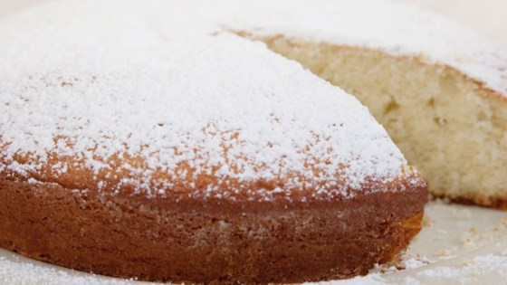

Cake Recipe

INGRIDIENTS
- 1/2 cup butter, softened
- 1 cup white sugar
- 2 eggs
- 1 1/2 teaspoons vanilla extract
- 1 3/4 cup all-purpose flour
- 2 teaspoon baking powder
- 1/2 teaspoon salt
- 1/2 cup milk
- 1/4 cup confectioners' sugar for dusting
METHOD
- Preheat oven to 350 degrees F (175 degrees C). Grease and flour a 9-inch round pan.
- In a medium bowl, cream together the butter and sugar until light and fluffy. Beat in the eggs, one at a
time, mixing until fully incorporated; stir in the vanilla. Combine the flour, baking powder and salt;
stir into the batter alternately with the milk. If the batter is too stiff, a tablespoon or two of milk
may be added. Spread the batter evenly into the prepared pan.
- Bake for 30 to 35 minutes in the preheated oven, until a toothpick inserted into the center comes out
clean. Cool in pan on a wire rack, then turn out onto a serving plate. Dust with confectioners' sugar
right before serving.
- Delicious cake is ready.